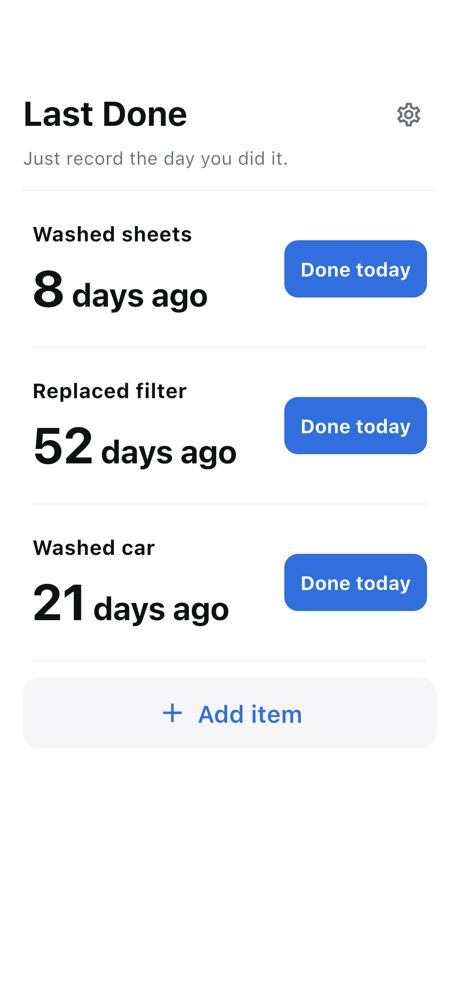

Name it
Add the cleaning, replacement or care you want to remember. A name is all you need.
Last Done · iOS / Android
Record cleaning, replacements and care. See how long it has been.
See how it worksPreparing for release

HOW IT WORKS
Add the cleaning, replacement or care you want to remember. A name is all you need.
Done today saves immediately. Undo a mistaken tap straight away.
See elapsed days on Home. Tap an item to see its history and average interval.
JUST THE ESSENTIALS
No reminders or recommended schedules. Averages reflect your own records.
Items and history are stored on your device. Recording works offline. Advertising uses an internet connection.
OS backups may include app data; recovery is not guaranteed.
Read the privacy policy →